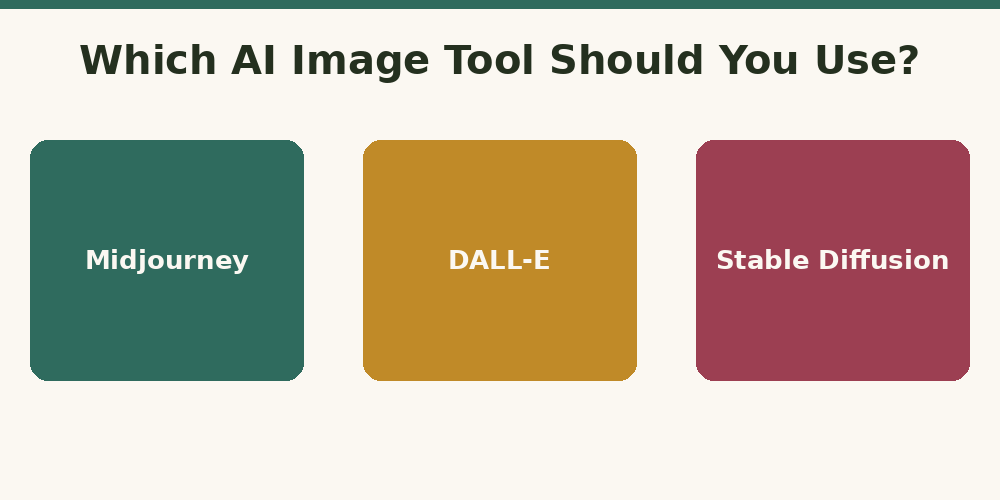

Midjourney vs DALL-E vs Stable Diffusion: Which Should You Use?
Published August 2026

If you're choosing an AI image generator for the first time, the three names that come up most are Midjourney, DALL-E, and Stable Diffusion. They can all turn a text prompt into an image, but they differ enough in style, cost, and control that the right pick depends on what you're making.
Midjourney: best for artistic, polished results
Midjourney tends to produce the most consistently striking, artistic images with minimal effort — it has a distinct aesthetic sense baked in. It runs through Discord (though a web app now exists too), which has a bit of a learning curve. This is also where writing good Midjourney prompts matters most: because the model leans stylistic, vague prompts can drift further from what you pictured than with other tools.
DALL-E: best for simplicity and integration
DALL-E, built by OpenAI, is tightly integrated into ChatGPT, making it the easiest starting point if you're already using ChatGPT for other tasks. It tends to follow literal instructions closely, which makes it a good choice when accuracy to your description matters more than artistic flair.
Stable Diffusion: best for control and customization
Stable Diffusion is open-source, meaning it can be run locally or through various web interfaces, and customized with community-made models for specific styles. It has the steepest learning curve of the three, but offers the most control for people willing to invest the time.
Which one should you actually pick?
If you want strong-looking results fast with minimal setup, Midjourney is the most popular choice. If you're already in the ChatGPT ecosystem and want simplicity, DALL-E is the easier on-ramp. If you want maximum control and don't mind a longer setup, Stable Diffusion rewards the extra effort.
Whichever tool you choose, the quality of your prompt still matters more than the tool itself. See our guide on 10 tips for writing better Midjourney prompts, or start from the basics in what is a prompt? A beginner's guide.
Ready to try one? Use the PromptNest generator to build a properly structured image prompt in seconds — it works well across all three tools.